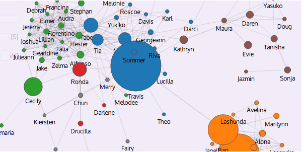

Immersion reveals how people are connected via email: Immersion
...
We will be using a range of applications over the semester, including
- spreadsheets,
- Tableau Public,
- Processing and
- Git/ GitHub.
Online Processing Resources:
-
http://www.processing.org/tutorials/gettingstarted/
-
http://processingjs.org/learning/
-
http://www.processing.org/tutorials/
-
http://www.learningprocessing.com/tutorials/
-
http://www.plethora-project.com/education/2011/09/12/processing-tutorials/
-
http://www.creativeapplications.net/processing/geometry-textures-shaders-processing-tutorial/
-
http://en.flossmanuals.net/digital-foundations/
-
http://hello.processing.org/ video lectures by Daniel Shiffman
-
http://learn.code.org/ - online programming course
Class Demos:
-
Week 2 Examples
-
Week 3 Examples
-
Week 4 Examples
-
Week 5 examples
-
Week 6 examples (on Michael's site)
-
Week 7 example
Partial List of Sites that Share their Data:
-
NOAA
-
National Phenology Network see:
the download data page (note: you may need to set up an account with
nature's notebook to access this data).
-
DataSF
-
data.gov
Git and GitHub:
We will be using github to organize our assignments. You can also use it to track changes and updates to the websites. Some introductions and tutorials on github are offered below:
-
git reference
-
Good Resources for Learning Git and GitHub
-
GIT CHEAT SHEET